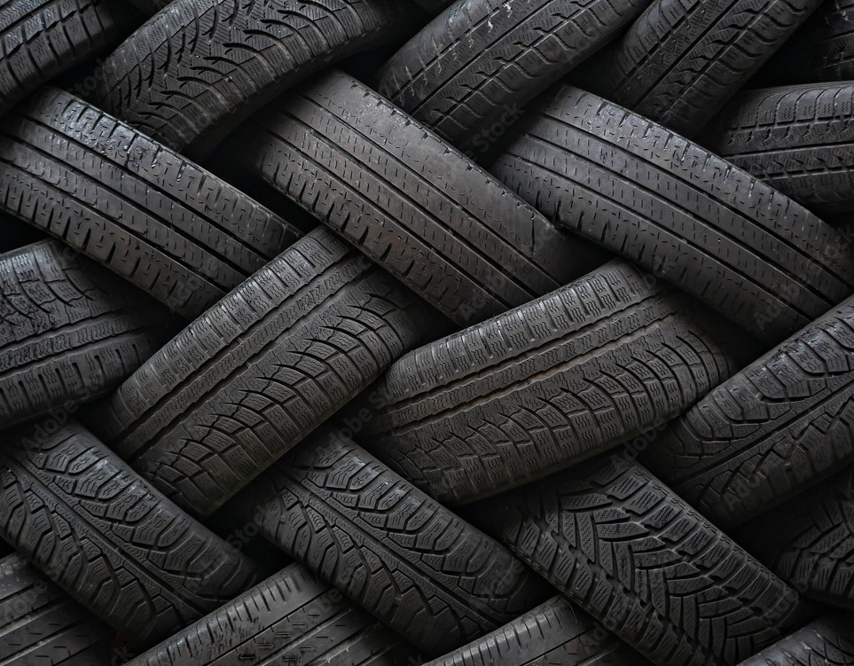
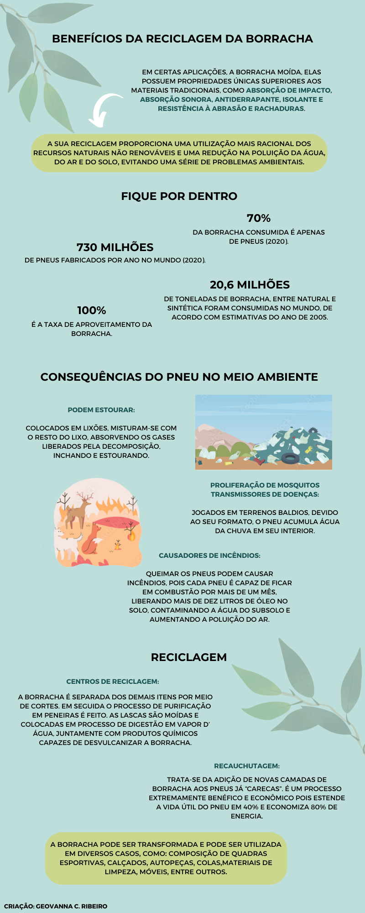

A reciclagem de borracha pode chegar a uma taxa de 100% de aproveitamento. Além disso, o custo da borracha reciclada pode chegar a 50% mais barata do que a matéria virgem. A estimativa é que em 2005 em torno de 20,6 milhões toneladas de borracha, entre natural e sintética foram consumidas no mundo e se calcula que, na média, gera-se 10% de resíduos durante o processo. A sua reciclagem pode gerar produtos como artigos de decoração, mosaicos, cestos, tapetes de carros, inúmeros componentes e ferramentas para o setor industrial e de elétrica.
Natural:
Trata-se de um polímero obtido por meio da seiva da seringueira. O látex é extraído através de cortes superficiais no caule da árvore. Depois de sua coagulação e secagem o material é aquecido e posteriormente processado com outras substâncias químicas, transformando-se em borracha. Alguns exemplos de materiais feitos a partir de borracha natural são borrachas, cabos elétricos e pneus.
Sintética:
É fabricada a partir do petróleo. É menos resistente e racha com o calor. Por isso muitos objetos de borracha sintética possuem um pouco de borracha natural em sua composição para compensar este defeito.
